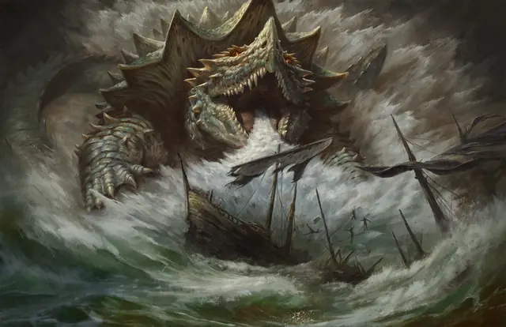

Драконочерепаха
Dragon Turtle
Громадный Дракон, Нейтральный

Класс Защиты 20 Инициатива +6 (16)
Хиты 356 (23к20 + 115)
Скорость 20 футов, Плавания 50 футов
| мод | спас | ||
|---|---|---|---|
| СИЛ | 25 | +7 | +7 |
| ЛОВ | 10 | +0 | +0 |
| ТЕЛ | 20 | +5 | +11 |
| мод | спас | ||
|---|---|---|---|
| ИНТ | 10 | +0 | +0 |
| МДР | 12 | +1 | +7 |
| ХАР | 12 | +1 | +1 |
Сопротивление урону Огонь
Чувства Тёмное зрение 120 футов, пассивное Восприятие 11
Языки Драконий, Первичный (Акван)
Опасность 17 (18 000 опыта; БВ +6)
Особенности
Амфибия. Драконочерепаха может дышать как воздухом, так и под водой.
Действия
Мультиатака. Драконочерепаха совершает три атаки Укусом. Она может заменить одну из этих атак на атаку Хвостом.
Укус. Бросок рукопашной атаки: +13, досягаемость 15 фт. Попадание: 23 (3к10 + 7) Колющего урона плюс 7 (2к6) урона Огнём. Нахождение под водой не даёт Сопротивление к этому урону Огнём.
Хвост. Бросок рукопашной атаки: +13, досягаемость 15 фт. Попадание: 18 (2к10 + 7) Дробящего урона. Если цель — существо Огромного размера или меньше, она Опрокидывается.
Паровое дыхание (Перезарядка 5–6). Спасбросок Телосложения: Сл 19, каждое существо в 60-футовом Конусе. Провал: 56 (16к6) урона Огнём. Успех: Только половина урона. Провал или успех: Нахождение под водой не даёт Сопротивление к этому урону Огнём.
Бонус мастерства +6
Среда обитания Прибрежье, Под водой
Сокровища Любые
Драконочерепаха
Древняя правительница подводных царств
Драконочерепахи — могучие существа, гигантские панцири которых можно по ошибке принять за острова, а их челюсти способны перекусить пополам целый корабль. Пока некоторые из этих подводных драконов безмятежно дремлют в глубине, другие ревностно защищают обширные территории своим обжигающим дыханием и заявляют права на всё, что погружается в морскую пучину или плывёт по волнам. Время от времени они соглашаются помочь пиратам, подводным народам или последователям морских богов в обмен на сокровища для своих кладовых на дне.
Многие драконочерепахи живут в укромных логовах или подводных развалинах на глубине и могут прятаться от жителей поверхности на протяжении многих поколений. Подобно своим далёким родственникам, они способны прожить исключительно долгую жизнь. Некоторые из них видели чудеса прошлых эпох и встречались с выдающимися личностями, посещавшими их царства. Эти драконочерепахи могут поделиться историями или провести через свои территории в обмен на сокровища, которые они никогда не встречали на дне океанов.